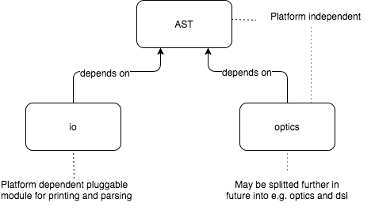

Modularity
xml-lens consists of three modules. They can be depicted as follows:

AST- very small module containing just ADTs to represent XML document. It has no dependencies and is platform independentoptics- module containing allOpticsand DSL implemented in terms of those Optics. It depends on Monocle and is platform independentio- module containing parser and printer implementations. It is platform dependent. As of now implementations for JVM and scala.js exist
AST
All types that comprise AST are in package pl.msitko.xml.entities.
optics
This module has two-level APIs: low-level and high-level. Low level contains mostly Monocle instances of optics for XML. This API is more powerful than high-level but requires some knowledge about Monocle and optics in general. High-level API contains combinators built on top of low-level optics. Thus, it provide API easier to use but more constrained.